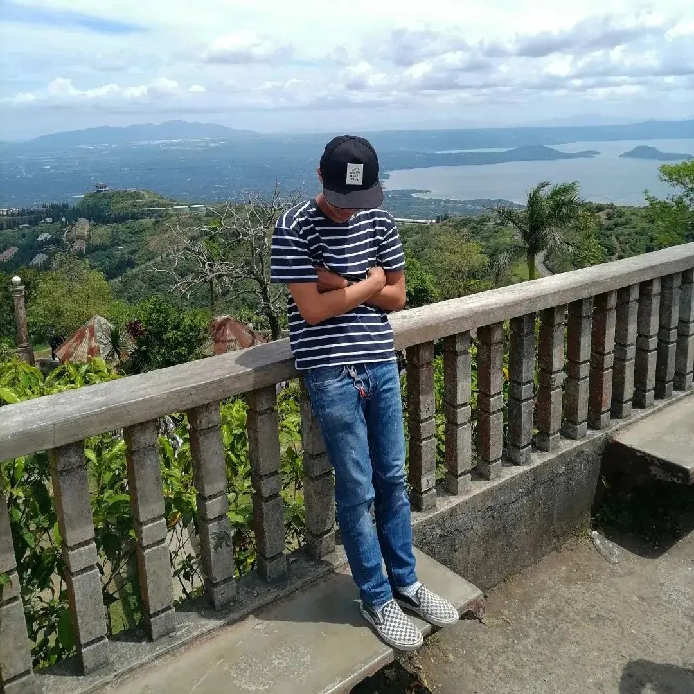

Gallery Carousel
Kaybiang Tunnel
Longest ride and biggest climb so far. One of the most popular ride attractions,
especially if you enjoy unwinding occasionally. After passing through that
tunnel, you will see the beautiful magnificent beaches, street food behind, and other brands of big
bikes. It is the longest tunnel in the Philippines, At 300 meters ternate,
cavite to nasugbu, batangas, tagaytay via the tunnel beneath Mt. Palay-palay.
Gallery Carousel

Puerto Azul
A famous beach resort near on ternate. I'm not sure why it became famous, but I'm guessing it's because of the vibe, which many tourists take to keep as souvenirs. This is the first stop over before going through the tunnel. There are a lot of climb spots here, and you will see monkeys everywhere. I wish I could go back someday.
Gallery Carousel

Mt. Taal Lake
You can see the Taal, Lake Batangas from this position. I'll assume there is an executive subdivision below.
You'll notice that every house has a different design, just as every road.This is my first visit to Tagaytay, so whenever I see a beautiful spot, I'll stop to take a memorable photograph.
Gallery Carousel

Peole's Park
Are very primitive you will definitely complain about the high of climbing.
It was both exhausting and fun. But if you're already there, you'll notice everything, including Taal Lake, Tall Mountains, and so on.
In underground they have a lot of souviners and sweets chocolates.
Gallery Carousel
Boo
My adorable dog but sometimes stubborn. He's 9 months old now, and every time we go outside,
he giving me headache. When I'm stressed, I always look at my dog and hug him tightly.
He's a friend and a stress reliever. But one thing I noticed about him was that he was always
moody in the morning, as if you couldn't play with him.